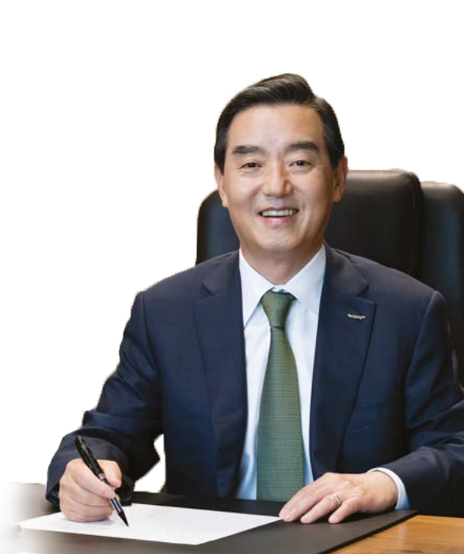
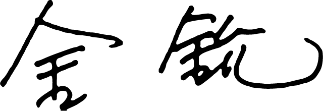

CEO인사말
“생활을 풍요롭고 편리하게 하는 기업의 실현을 위해 100년의 저력을 바탕으로 다가올 100년을 준비하겠습니다.”
삼양은 ‘생활을 풍요롭고 편리하게 하는 기업’의 비전 달성을 목표로 모든 경영전략과 경영방침을 전개하고 있습니다. 또한 글로벌, 스페셜티, 신사업에 주력하며 다가오는 4차 산업혁명시대에도 변함없이 성장과 혁신을 추진하겠습니다.
1924년 창립 이래 오랜 세월을 정도경영과 신뢰경영의 원칙 하에 성장해 온 삼양을 아껴주시는 모든 분들께 진심으로 감사드립니다.
100년 가까운 성장의 역사를 간직한 저희 삼양은, 지나온 세월의 경험을 바탕으로 새롭게 다가올 100년을 준비하고 있습니다. 숨가쁘게 빨리 변화하는 시대에도 ‘생활을 풍요롭고 편리하게 하는 기업, 삼양’의 변함없는 가치를 지키기 위해 VISION 2025의 비전을 정립하고 변화를 선도하는 글로벌 기업으로 성장하고 있습니다.
화학, 식품, 의약바이오, 패키징의 4개 핵심 사업 부문의 글로벌 경쟁력 강화와 스페셜티화를 통해 고객들에게 더욱 특별한 가치를 제공할 것입니다.
지속성장을 위해 신사업을 발굴하여 미래지향적 사업 포트폴리오를 구축하고, 디지털 혁신으로 4차 산업혁명에도 적극 대응해나가고 있습니다. 지금의 생각과 업무방식에 안주하지 않고 혁신을 장려해 R&D의 문을 과감하게 개방, 세계 유수 기관들과의 협력 시스템을 더욱 강화하여 세계적 수준의 역량을 갖춘 글로벌 기업으로 도약하겠습니다.
획기적인 변화의 시대가 될 4차 산업혁명시대에도 삼양이 우리 모두의 생활을 풍요롭고 편리하게 하는 기업으로 성장할 수 있도록 많은 관심과 따뜻한 격려를 부탁드립니다. 저희는 다가오는 100년을 위해 배전의 노력을 하겠습니다.
삼양홀딩스 CEO 김 윤
